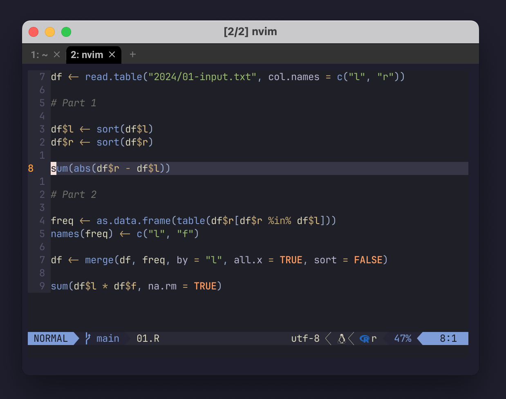

This is NOT a place for you to learn anything. It is NOT a guide. It’s a “traditional” blog post where I waffle on and indulge myself. There may be some accidental nuggets of wisdom… but I cannot be held liable for any strain you experience trying to find them.

Wouldn’t it be nice?
I wonder if this resonates with you? Ever read people’s LinkedIn profiles, or their blogs/websites/CVs, and think:
Wow. This person is absolutely incredible. They have achieved/know so much.
Wouldn’t it be nice if that person posted on their LinkedIn about the shitty fucking week they had trying to learn about containers for the first time? Or how that one time they had to work a weekend because they re-ran their Jupyter notebook from top to bottom and the results were completely different to what they showed their boss?
How about if they tried something and spent many days – weeks, months! – only to realise they just couldn’t understand it, and kinda like, gave up?
Well that’s me with Neovim.
I’m a mid-level programmer/Data Scientist. I’m now way beyond a total beginner, and there are actually people who look up to me as a professional. It feels unbelievable at times, but, that’s what happens when you work hard, learn, and care about the craft (and other people).
Read on to hear the struggle.
Obliterated
When I started programming in March 2020 I was working in evolutionary biology. I don’t know how it is now, but back then we were using a mix of proprietary GUI-based programs and command line tools written and published by academics. That meant my introduction to programming was the command line (specifically using bash), then Python, and then R. If I needed to write a script I’d come up with a little toy dataset, open the terminal, invoke Python/R, and write every line of code myself using the vanilla REPL.
That’s right. There was no
- Syntax highlighting
- Linting
- Hovers
- Keyboard shortcuts
- Formatting
There wasn’t even ‘bracketed paste’, which as I understand it just means ‘multi-line code pasting into the terminal’. It was a literal line-by-line workflow where even a for-loop had to be input and sent to the interpreter in parts.
At first I did it because I really didn’t know any better. As I became more aware of the options, I inevitably switched to using Spyder for Python and RStudio for R, and eventually RStudio for Python for a while (yes, really o_O).
I’ve always been grateful for starting in the terminal though. I’ve never been afraid to fire up an R/Python REPL and do quick checks on language behaviour.
In fact, at times I’ve felt a little smug: I’ve had colleagues who don’t know the difference between R and RStudio. Meanwhile, I “graduated” last year to using VS Code as my main IDE. Yeehaw, I’m a cowboy riding out there in the wild west of Microsoft’s Extension Marketplace. I dazzled colleagues by rummaging around in the settings.json, pointing to an R binary for the Radian terminal. I even exposed addin_reshape() from codegrip and contributed to the docs..! Ok, I admit to being genuinely proud of that one, even if it was easy.
Then came the vim extension for VS Code. Wow. So cool. Even though the productivity gains from vim motions are marginal at best, and the time spent trying to adjust will never be won back. But you know, the important thing at the time was it kept me engaged with programming. It also exposed me to more computer sciencey developers and low-level language practitioners. Which in turn, of course, lead me to Neovim.
And Neovim obliterated any sense of smugness that I had.
It’s good to get in over your head every once in a while. It’s humbling.
Neovim
If you don’t know, Neovim (A.K.A nvim) is a text editor that can be used as an IDE. It’s a bit like VS Code in that it’s configurable, but way harder. In the nvim world people juice up the editor with extra functionality by installing plugins, most of which are written in Lua.
Apparently Lua is the easiest language ever to learn and literal children use it to make Roblox games. If you use nvim you’ll also be coding in Lua: it’s the language used for your config file/s.
I’m not going to say that I didn’t understand anything in the config files. But I didn’t find Lua super easy to get a flavour of. I just wanted my config to work most of the time, so I would mostly look at other people’s configs – limiting my exposure to Lua as a general language. This meant whenever the config would break or I’d get unexpected behaviour I didn’t really know what to do. It turns out that knowing words is important1 when you’re learning programming.
I also found the documentation for most plugins threadbare. Developers: Don’t assume too much of your potential users. Many of us are, frankly, morons, and many more will have a TikTok user’s attention span. You do actually need to tell us what your software does and how it can be used.
Clearly I needed more help, so I read and watched a lot of tutorials. I found typecraft, who I would like to hug. I found the mononymous TJ, nvim contributor and creator of treesitter. There is of course fellow sober addict and programming craftsman ThePrimeagen (“Primeagen mentioned!”, “Let’s go boys!!”, etc.). I watched Josean Martinez’s and Henry Misc’s guides. Probably the best series of them all was by Vhyrro, who gave examples and explained the ‘why’ of things2 for different facets of the editor – but who maddeningly never finished the video series!
They all helped, but in the end, it was still a huge amount of work. My knowledge wasn’t coming together. I couldn’t touch type, which is kind of a vim pre-requisite, so I tried to learn that via TypingClub. That definitely helped, but didn’t stick because it was too slow for work. Then a young 20-something on Mastodon tooted about how they were able to touch type faster than their old speed after just a month of TypingClub, and it completely unlocked nvim for them, and… I died a bit inside. Touch typing for me is honestly just super hard – even after several months.
I’d estimate that all told I probably spent a few weeks dedicated to learning about Neovim as a tool, lots of vim motions and commands, editing and using different configs, the language server protocol, linters, formatters, stuff like that. I must have used it as an IDE for a good 3 months. There were periods that I really enjoyed it.
I’d like to try again one day. There’s just something alluring about it. It reminds me of watching my older brother on the computer in the early 90s. The vibe appeals.
Not all wasted
So now I’m mostly using VS Code and the vim extension. I’m maybe faster in some ways than pre-nvim. One thing I like to do is open nvim in the terminal VS Code’s integrated terminal. That way I can qickly edit a file without having to open and close a new tab in the main editor.
It’s also given me gems like the vim ‘find and replace within highlighted text’ command: :s/find this phrase/replace with this/g.
Maybe even better is that it started to teach me about the differences between formatters, linters, and LSPs. In reality there’s overlap between the three categories, with some LSPs using linters, or formatters that use linters, and whatever ruff does. But at least it’s not a complete mystery. Case in point, I was recently able to help someone on Mastodon with an R linting bugbear in the context of nvim – even though it’s been 6 months since I used it in earnest!
Learning is a journey and even when it is hard, or doesn’t work out, we are bound to learn some things along the way.
Footnotes
See “How to teach programming (and other things)?” by Felienne Hermans↩︎
Again, see Felienne’s talk. It’s important!↩︎